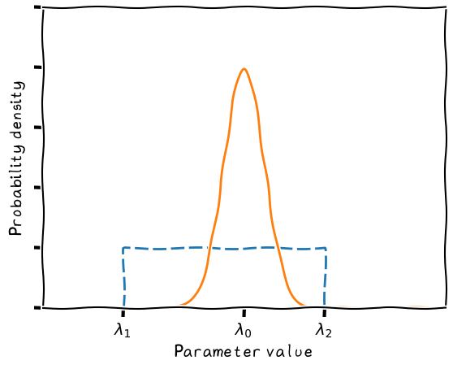

%matplotlib inline
import matplotlib.pyplot as plt
import matplotlib.ticker as mticker
import numpy as np
from scipy.stats import norm
# set parameters
l1 = 200
l2 = 700
l0 = 500
width = 50
prior = 1./(l2-l1)
# range
xstart = 0
xend = 1000
# plot
# create figure
with plt.xkcd():
fig = plt.figure()
ax = fig.subplots()
x_axis = np.arange(xstart, xend, 0.01)
# draw prior
ax.plot([l1, l1, l2, l2], [0, prior, prior, 0], dashes=[6, 2])
ax.plot(x_axis, norm.pdf(x_axis, l0, width))
ax.set_xlim(0, 1000)
ax.set_ylim(0, 0.01)
ax.set_xlabel('Parameter value')
ax.set_ylabel(r'Probability density')
# Turn off tick labels
ax.set_yticklabels([])
ax.set_xticklabels([])
#label key points
xticks = [l1,l0,l2]
ax.set_xticks(xticks)
x_labels = [r"$\lambda_1$", r"$\lambda_0$", r"$\lambda_2$"]
ax.set_xticklabels(x_labels)

Seaborn version (abandoned)#
Make same plot, but use the seaborn libary to change look and feel
import seaborn as sns
# create fig, axes
figsns = plt.figure()
axsns = figsns.subplots()
sns.lineplot(x=[l1, l1, l2, l2], y=[0, prior, prior, 0], ax=axsns)
sns.lineplot(x_axis, norm.pdf(x_axis, l0, width), ax=axsns)
---------------------------------------------------------------------------
TypeError Traceback (most recent call last)
Cell In[5], line 5
3 axsns = figsns.subplots()
4 sns.lineplot(x=[l1, l1, l2, l2], y=[0, prior, prior, 0], ax=axsns)
----> 5 sns.lineplot(x_axis, norm.pdf(x_axis, l0, width), ax=axsns)
TypeError: lineplot() takes from 0 to 1 positional arguments but 2 positional arguments (and 1 keyword-only argument) were given